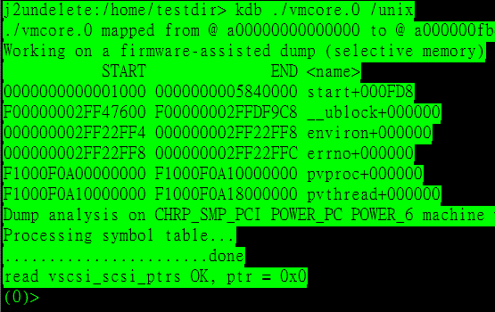
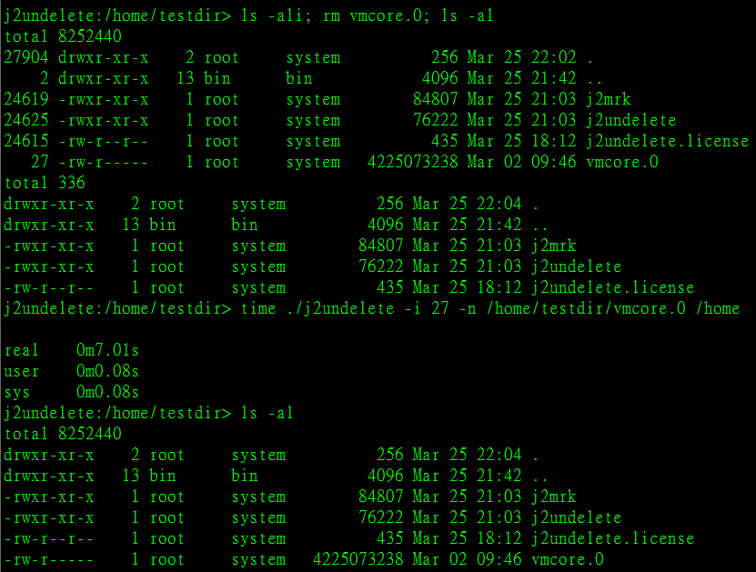

j2undelete
j2undelete is the only tool in the world which can instantly recover deleted jfs2 file without umount.
1. umount is needless using j2undelete which means the application and production system is not interrupted during data recovery.
2. The deleted jfs2 file is instantly recovered in its original place,
which means the recovery time is very short(from several seconds to minutes), and system performance is never affected.
3. j2undelete can recover all data, even it is written into the file after deletion.
How to restore deleted files using j2undelete
1. Never umount the fs if the deleted file is still used.
2. If the deleted file is not used, run "j2recoverlist -f" to check what files can be restored by j2undelete
3. Contact j2recover@163.com to get j2undelete
4. run j2undelete
Example
The vmcore.0 file is used by kdb:

The vmcore.0 is deleted by rm:

It is recovered by j2undelete after 7 seconds.